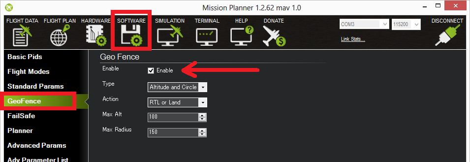

Cylindrical Fence¶
Overview¶
ArduPilot includes a simple “tin can” shaped fence centered on home that will attempt to stop your copter/rover from flying/driving too far away by stopping at the fence in some Copter/Rover modes if Object Avoidance is setup and executing a configurable action. The maximum circular distance and altitude (altitude used by Plane and Copter only) and the vehicle behavior when the fence is reached can be configured using a ground station like Mission Planner or QGC.
Rover Actions¶
Rover has no altitude actions, but if it reaches the Cylindrical fence boundary in either Steering or Acro modes, it will simply stop and not move beyond it. In other modes, it will execute the FENCE_ACTION.
Copter Actions¶
Copter will stop increasing altitude at FENCE_ALT_MAX in Loiter, PosHold, and AltHold modes.
In Loiter mode, it will stop at the horizontal boundaries.
In other modes, it will execute the FENCE_ACTION below if the altitude or boundary is reached.
FENCE_ACTION |
Copter |
Rover |
|---|---|---|
0 |
Report Only |
|
1 |
RTL/LAND |
RTL/HOLD |
2 |
LAND |
HOLD |
3 |
SmartRTL/RTL/LAND |
SmartRTL/RTL/HOLD |
4 |
BRAKE/LAND |
SmartRTL/HOLD |
5 |
SmartRTL or LAND |
not applicable |
Note
RTL/HOLD,etc. means it will attempt RTL first, but if it can’t switch to that mode (ie for RTL, GPS lock is lost), it will attempt to switch to the next,in this case HOLD.
At the moment the fence is breached a backup fence is erected 20m further out (or up). If the vehicle breaches this backup fence (for example if the vehicle is not set up correctly or the operator takes control but is unable to bring the copter back towards home), the vehicle will execute the FENCE_ACTION again (and another backup fence an additional 20m further out will be created if this is breached again).
If the vehicle eventually proceeds 100m outside the configured fence distance, despite the backup fences, the vehicle will switch into LAND mode (HOLD for Rover). The idea being that it’s clearly impossible to get the vehicle home so best to just bring it down/stop it. The pilot can still retake control of course with the flight mode switches. Like with the earlier fences, another fence is erected 20m out which will again switch the vehicle to LAND (HOLD for Rover), if it continues away from home.
Plane Actions¶
If, enabled, and the fence radius (FENCE_RADIUS) or altitudes, if non-zero, (FENCE_ALT_MAX and FENCE_ALT_MIN) are exceeded, Plane will execute the FENCE_ACTION below:
FENCE_ACTION |
Plane |
|---|---|
0 |
Report Only |
1 |
RTL |
6 |
Guided to return point |
7 |
Guided to return point with pilot throttle control |
If FENCE_ACTION is set to a guided return mode (6 or 7), the altitude at which it returns is determined by FENCE_RET_ALT. If a fence return point is not setup(see video below) for these actions, the vehicle will RTL.
The return point can also be replaced by the nearest rally point (See: Rally Points) as a destination, if FENCE_RET_RALLY is enabled.
Modes changes can be executed after the fence breach unless the FENCE_OPTIONS is set to “1”’. If set, the vehicle must return to within the fence boundary in order to change modes.
Enabling the Fence in Mission Planner¶
To enable Fences, go to the Mission Planner full parameter list (CONFIG->Full Parameter Tree), search for items with FENCE_:
{kind=link}
Plane Parameter List (Copter/Rover have fewer)
Set FENCE_ACTION = to whatever you wish for a breach action. These will vary depending on vehicle type.
Set FENCE_ALT_MAX = to the altitude limit relative to home you want (in meters). This is unavailable in Rover.
Set FENCE_ENABLE =1 to enable FENCEs.
Set FENCE_MARGIN = to the distance from the fence horizontal boundary the vehicle must maintain in order to prevent a breach.
Set FENCE_RADIUS to the maximum distance from HOME you want (in meters). This should normally be at least 50m. This value must be larger than FENCE_MARGIN and greater than 30m.
FENCE_TOTAL should not be changed manually and indicates the number of inclusion/exclusion fence points stored. (See Inclusion and Exclusion Fences)
Set FENCE_TYPE = is a bitmap set to enable the various fence types: MIN or MAX altitude, simple CIRCLE tin can around HOME, or POLYGON fences. The POLYGON fences must also have been loaded via a fence list from a ground control station in order to be active.
Note
Polygon fence type includes the circular fences specified in the Inclusion/Exclusion fence list. The simple home centered CIRCLE fence is a separate fence. Rover ignores altitudes, if set.
Defaults for FENCE_TYPE are:
Rover: CIRCLE and POLYGON
Copter: ALT MAX, CIRCLE, and POLYGON
Plane: POLYGON
If Plane, you can also:
Set the FENCE_ALT_MIN as a breach boundary.
Set FENCE_AUTOENABLE = to allow automatic temporary (until reboot) forcing of FENCE_ENABLE =1 under certain vehicle conditions, such as arming or takeoff. A value of 0 disables this feature.
FENCE_RET_RALLY allows returning to the nearest RALLY point (See: Rally Points), if loaded, instead of HOME.
Copter GeoFence Tab¶
Copter and Traditional Heli , when connected to Mission Planner, present a CONFIG tab called GeoFence which provides another way to access these parameters in those vehicles.
{kind=link}
Enabling the fence with an RC Channel Auxiliary Switch¶
It is not necessary to set-up a switch to enable or disable the fence but if you wish to control the fence with a switch follow these steps:
for firmware versions before 4.0:
Go to the Mission Planner’s Config/Tuning > Extended Tuning screen and set either “Ch7 Opt” OR “Ch8 Opt” to Fence. These parameters can also be directly set from the Config/Tuning > Full Parameter List screen
{kind=link}
Alternatively, for firmware versions 4.0 or later, an RCx_OPTION can be set via the Config/Tuning > Full Parameter List screen:
Use an RCx_OPTION set to Fence
setting the switch high (i.e. PWM > 1800) will enable the fence, low (under 1800) will disable the fence.
Warnings:¶
The minimum recommended fence radius is 30m
The fence requires the GPS to be functioning well so do not disable the GPS arming check nor the EKF failsafe while the fence is enabled. Conversely, if you disable either of these checks, disable the Fence.
For the best results, ensure RTL is working on your vehicle.
With the Fence enabled in Copter and Rover, the pre-arm checks will require you have GPS lock before arming the vehicle.
In Copter, if EKF failsafe occurs and the Fence is enabled and you lose GPS lock while flying the fence will be disabled.
In Copter, if EKF failsafe occurs and the Fence is enabled and in an autonomous mode, the vehicle will switch to LAND (HOLD for Rover) because we no longer know the vehicle position and we want to ensure the vehicle never travels far outside the fence. If this is not desired, the pilot can retake control by moving the flight mode switch to a manual mode.
The Copter and Rover backup fences are created 20m out from the previous breached fence not 20m out from the vehicle’s position. This means if you choose to override the fence you may have less than 20m to regain vehicle control before the fence switches the vehicle to the FENCE_ACTION again. If you really want to override the fence, you should be ready to switch the flight mode twice or alternatively set-up the enable/disable fence switch.